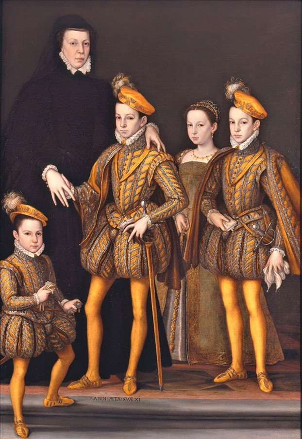
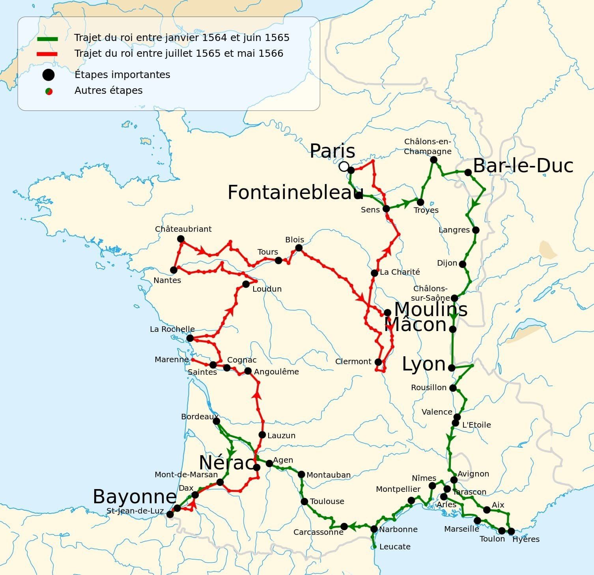

Digital Projects

Digital Accessibility of Catherine de’ Medici’s Correspondence
An open-access digital archive designed to make Catherine de’ Medici’s correspondence (1564–1566) searchable and accessible. Built using HTML and JavaScript, the interface offers filters by recipient, gender, date, and metadata. The project integrates sources from Gallica and Wikidata, and is featured in the GC Digital Scholarship Showcase 2025.
Lettres de Catherine de Médicis (1564–1566)
A prototype database developed as part of my Master’s dissertation in French Renaissance Literature and Digital Humanities at Université Gustave Eiffel, under the supervision of Caroline Trotot, and in connection with the DIGIS Graduate Program (Digital Studies and Innovation for Smart-Cities).
The site catalogs the letters written by Catherine de’ Medici during the Grand Tour of France (1564–1566), based on volumes 2 and 10 of the printed edition Lettres de Catherine de Médicis, published by the Comité des travaux historiques et scientifiques. It features OCR-corrected texts, XML-TEI encoding, and a data model centered on epistolary metadata.
The platform highlights the connection between the Queen Mother’s geographic itinerary and her epistolary strategy, allowing users to explore the letters through metadata and filters. It was developed in collaboration with the research project Cités des Dames, créatrices dans la cité and complements an interactive map created with Cour de France.fr.
